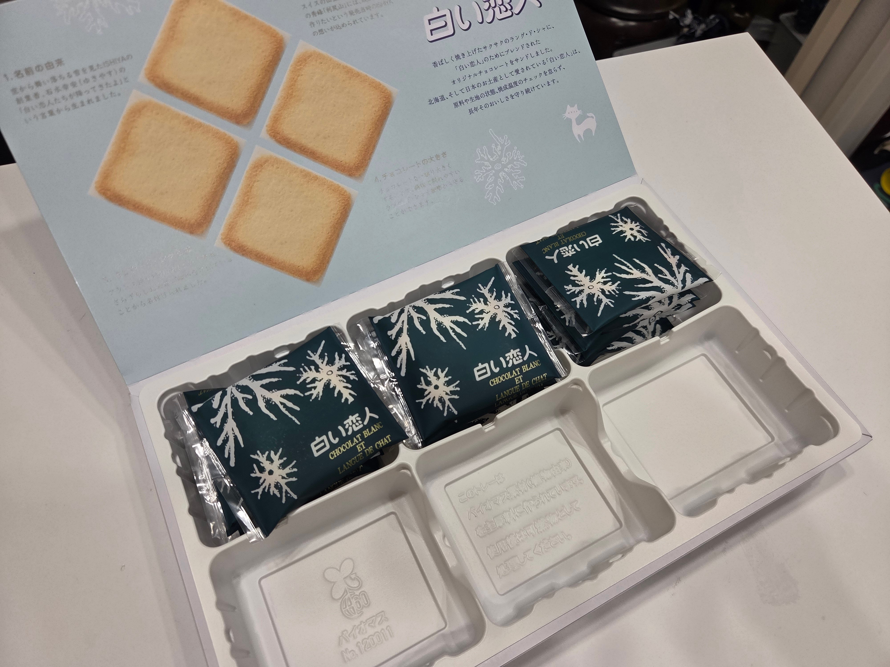

여친이 선물받아와서 먹고 12개 남아서
6개씩 걸고 가위바위보했는데
내가 6판 다이김
그래서 여친이 받아온거니까 다시6개 주고
다시 가위바위보 했는데 다시 6판 다이겨버림;;
그랬더니
여친 혼자 삐진건지 산책나감;;;

여친이 선물받아와서 먹고 12개 남아서
6개씩 걸고 가위바위보했는데
내가 6판 다이김
그래서 여친이 받아온거니까 다시6개 주고
다시 가위바위보 했는데 다시 6판 다이겨버림;;
그랬더니
여친 혼자 삐진건지 산책나감;;;
뭐하냐 니가 내꺼니까 먹여준다해야지 아직멀었네 ㅎㅎㅎㅎ
머지 펑리수처럼 생겼네
일본과자 유명함
시로이 코이비토(하얀 연인)이라는 과자인데, 홋카이도 삿포로의 명물 과자임. 아마 홋카이도 대표 특산품 중 하나일겨. 얇은 랑그드샤 쿠키 사이에 화이트 초콜릿을 넣은 과자인데 대존맛임. 우리나라에서도 아주 가끔 기간한정으로 팔더라.
아항 일본 많이 갔는데 북해도는 한번도 안가봤어서 고마워 빵댕이애호가
도쿄 오사카 면세점에서도 팔아
일본 4도 중에 안 파는 곳 없음ㅋㅋㅋ
로이스 초코렛, 쟈가포클과 함께 일본 공항 면세점 3대장중 하나.
워낙에 대박난 상품이라 비슷하게 따라하는 제품이 끝없이 계속 나오는중
고급 쿠크다스래
쿠크다스맛임
어케 이겼노
시발 비틱하네 ㅡㅡ
데이터센터 정전된 줄 알았네.
헌터헌터 곤한테 가위바위보 배웟나보네
우우우
쌀쌀쌀
나쁜새끼
시로이 코히비토
존맛탱
??? : 게임 ㅈ가티하네
우우 쓰레기!!
게리 치즈과자 선에서 정리됨
마 뜨밤보내고 자라
대참사는 시발 뭔 좆같은게 비틱질하네
6개씩 걸고 6판 이기면 12개중 36개를 땄다는건가
땃다고 흥분해서 잘 못 쓴듯?
여친(왼손)
야구권 해봐라 홀랑 다 벗기겠네
걔는 도박 하면 안 되겠다
ㅋㅋㅋㅋㅋㅋㅋㅋㅋㅋ귀엽